Studies
This page lists currently summarized BMAA-related studies from newest to oldest. Each card highlights the study direction, key outcomes, and the draft figure currently available.
From body to mind: BMAA enhances body awareness, mindfulness, positive embodiment and mental health
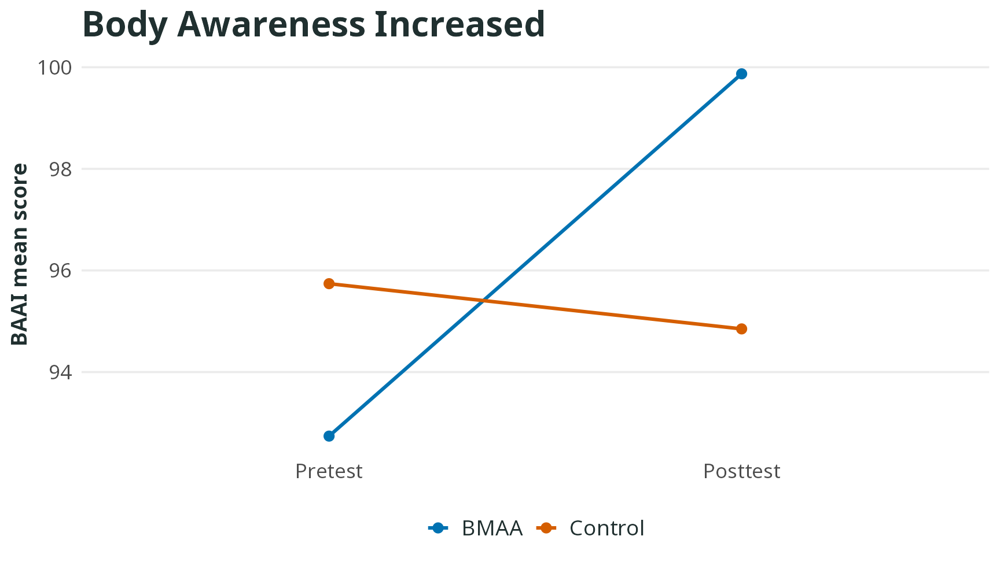
Healthcare students showed positive changes in body awareness, mental health, life satisfaction, and emotional expression after an eight-week BMAA program.
- Body awareness and mental health increased
- Life satisfaction increased
- Alexithymia decreased
From the body to the mind: interoception and sense of agency as mechanisms of depression reduction
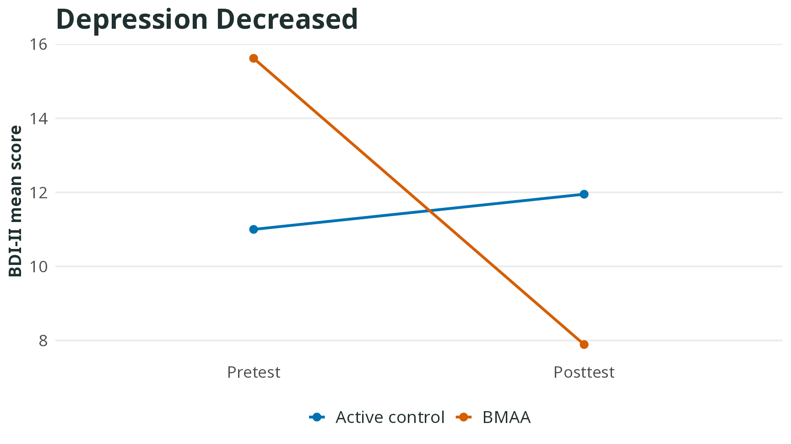
This study connects depression reduction with interoception and sense of agency, suggesting that BMAA may first strengthen body awareness and then reduce helplessness.
- Depression decreased
- Interoceptive awareness increased
- Negative sense of agency decreased
Effects of BMAA combined with lucid-dream therapy on nightmares and sleep quality
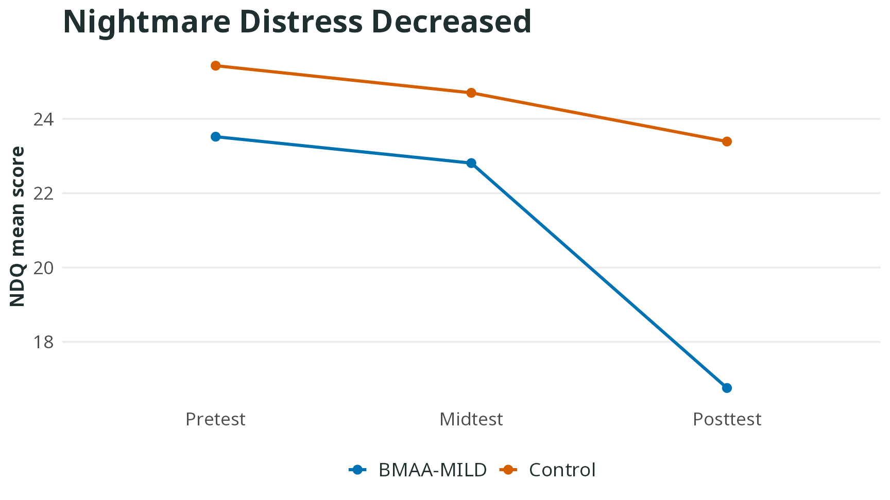
BMAA-MILD combined body awareness with lucid-dream induction skills, with the clearest outcomes in reduced nightmare burden and improved sleep quality.
- Nightmare distress decreased
- Nightmare effects on daily life decreased
- Sleep quality improved
Improving interoceptive ability to reduce internet addiction tendency
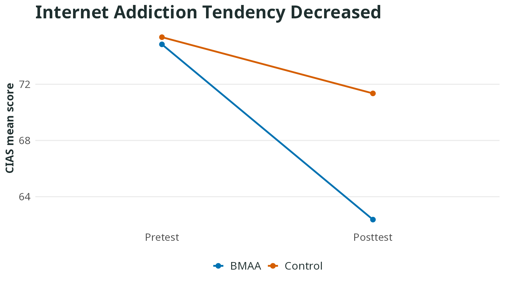
This randomized study examined whether BMAA could reduce internet addiction tendency while improving interoceptive awareness and accuracy.
- CIAS total score decreased
- Core internet-addiction symptoms decreased
- Interoceptive awareness and accuracy increased
Effects of BMAA on interoception, alexithymia, and empathy among adults with high autistic traits
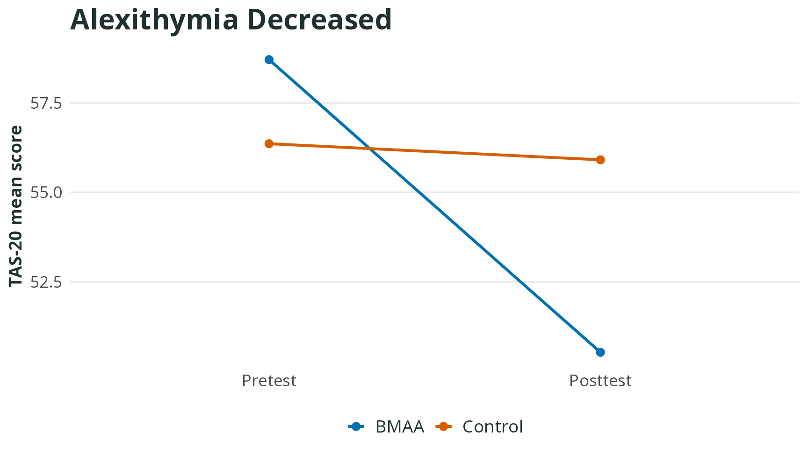
This study focused on adults with high autistic traits and examined whether BMAA supports body awareness, emotion understanding, and subtle social-cue processing.
- Interoception increased
- Alexithymia decreased
- Low-intensity facial-expression recognition improved
A preliminary study of a camp-based dynamic contemplative course on children’s sustained attention and balance
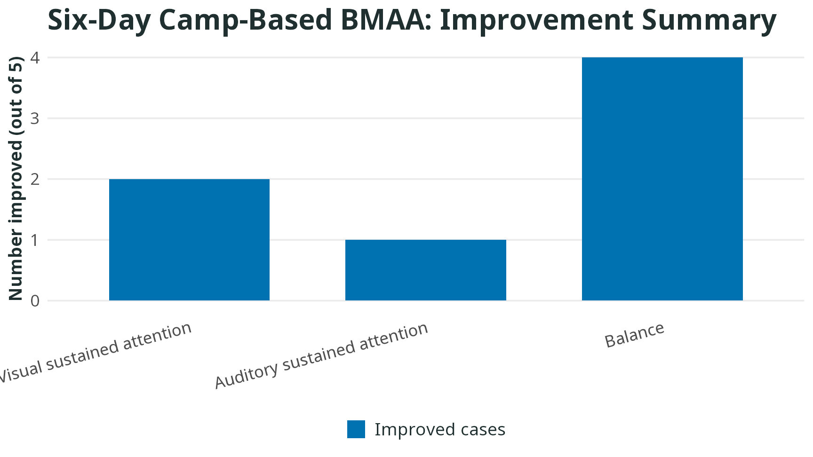
This small case-series study explored possible changes in children’s sustained attention and balance after a six-day camp-based BMAA course.
- Balance improved in the largest number of cases
- Some children improved in sustained attention
- Best interpreted as preliminary evidence
Brief mindfulness guidance reduces implicit gender stereotypes during reading
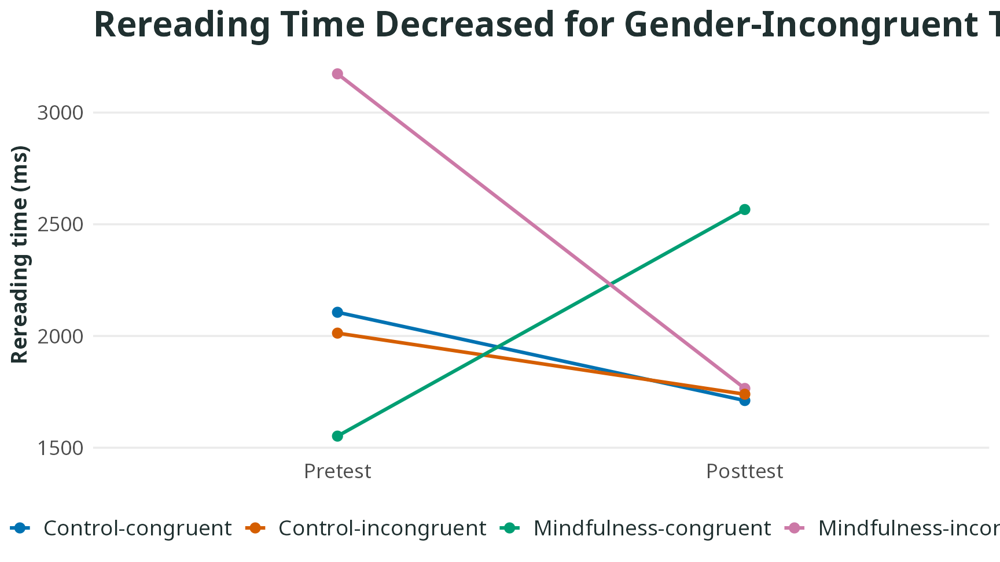
Using eye-tracking data, this study tested whether brief mindfulness guidance reduced rereading responses to gender-stereotype-incongruent passages.
- Rereading time for incongruent passages decreased
- Implicit gender-stereotype effects weakened
- The practice included BMAA-derived warm-up exercises
Effects of a short-term dynamic body-mind awareness course on teachers’ stress and resilience
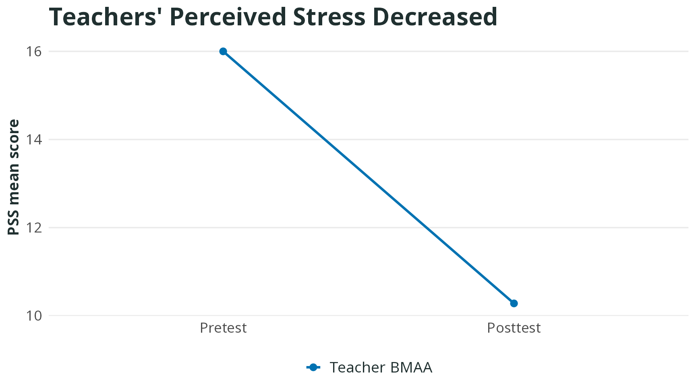
This single-group study examined changes in stress, affect, resilience, and interoceptive awareness among in-service elementary school teachers.
- Perceived stress decreased
- Resilience increased
- Negative affect decreased
Effects of a two-week BMAA practice on emotion regulation among university students
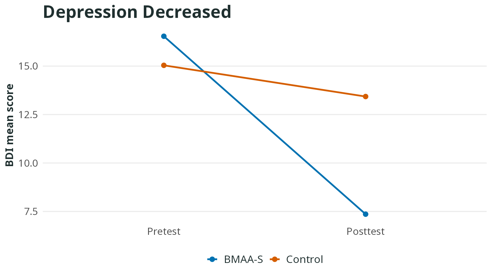
Short-form BMAA-S was used to examine changes in depressive symptoms, emotion-regulation difficulty, and body awareness among university students.
- Depression decreased
- Emotion-regulation difficulty decreased
- Body awareness increased
Feel your body: short-term in-class dynamic contemplative practice for children
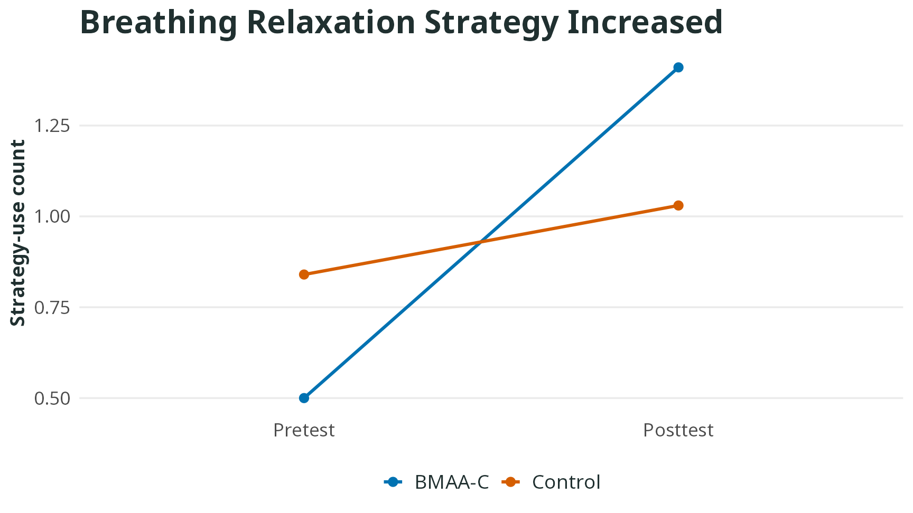
This study focused on whether children used more self-directed emotion-regulation strategies in negative emotional situations after BMAA-C.
- Breathing relaxation increased
- Reappraisal increased
- Emotion regulation became more self-directed
BMAA and integrated activity training for improving children’s executive function and emotion regulation
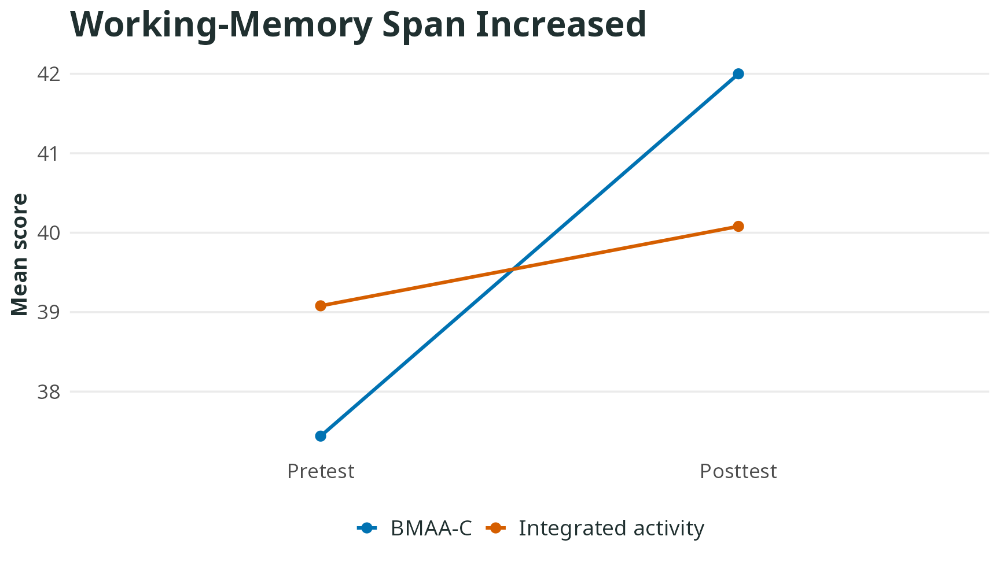
This study compared BMAA-C with an integrated activity program, showing different benefit patterns across cognition and emotion-regulation ratings.
- BMAA-C showed clearer working-memory gains
- Integrated activity showed larger emotion-regulation rating changes
- The programs appeared to support different outcomes
An initial exploration of body-mind interaction: effects of BMAA on body sensation, working memory, and attentional control
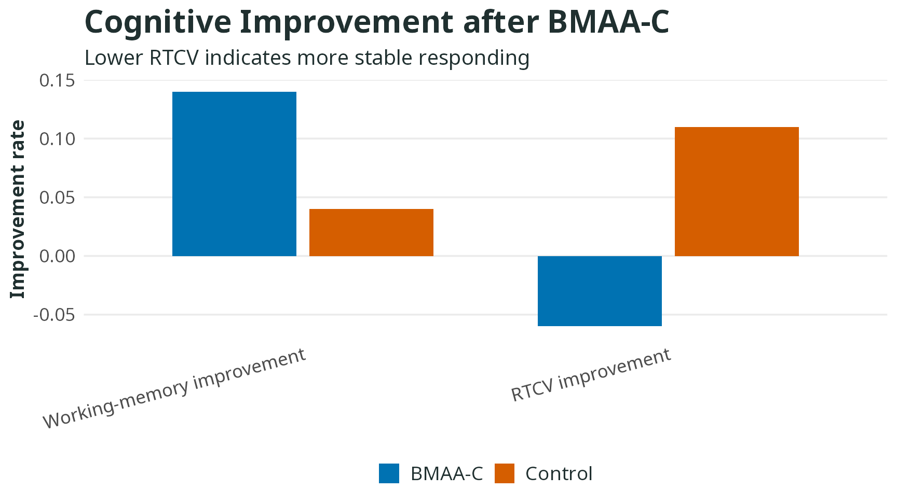
This study examined relations between children’s body awareness and cognitive functions, then observed changes in working memory and attentional control after BMAA-C.
- Working-memory improvement rate was higher
- Attention stability showed different changes
- Baseline body awareness may shape benefit
What Confucius practiced is good for your mind: contemplative practice and executive functions
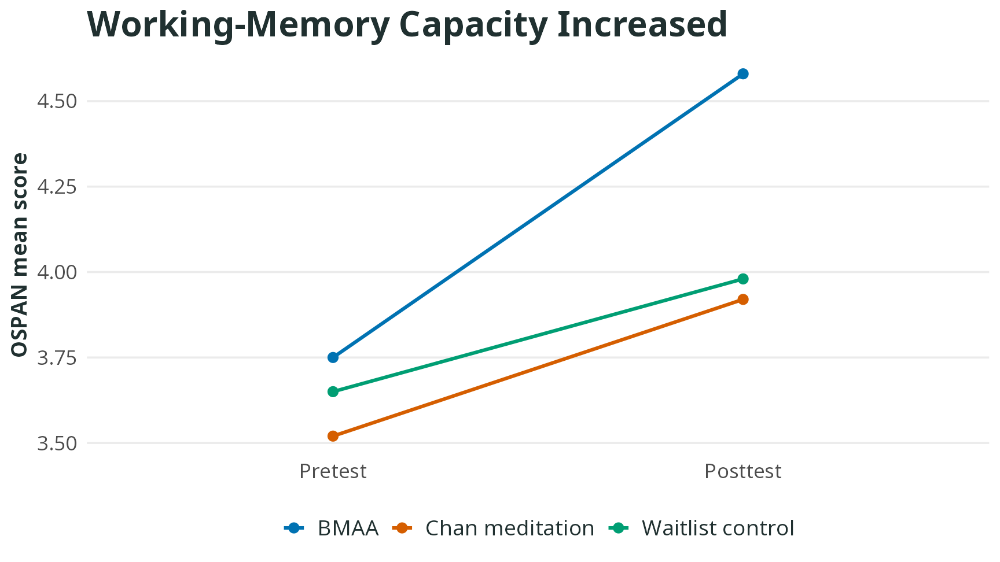
This study compared BMAA, Chan meditation, and a waitlist control group to examine how short-term contemplative practice affects executive functions.
- BMAA showed clearer working-memory gains
- Chan meditation showed clearer reduction in attention switching cost
- Different practices showed different cognitive profiles